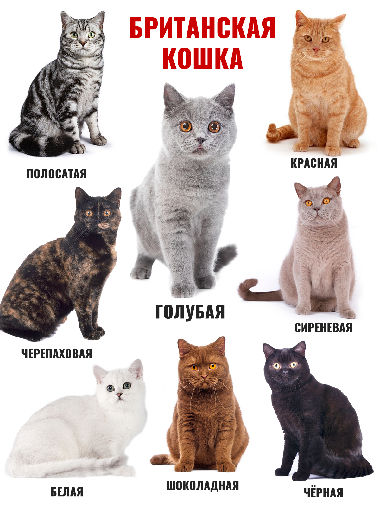

Британские короткошёрстные (рус. — британцы) — короткошёрстные кошки. Как правило, это сильные и крепкие кошки. Бывают от средних до крупных размеров. Согласно легенде, являются потомками Чеширского кота.
Шерсть у британской кошки очень пушистая и мягкая, хоть и довольно короткая. Британским кошкам свойственно много различных окрасов, самые популярные — сплошные (серо-голубой, голубой, чёрный, лиловый, шоколадный), табби и серебристые табби, их разновидности: пятно, полоса и мрамор.
Сплошные — окрасы, при которых все тело кошки окрашено равномерно в один цвет, без единой точки. Самый распространённый одноцветный окрас британской короткошёрстной кошки — серо-голубой.
Черепаховые — сочетание чёрного с красным, голубого с кремовым, при таком окрасе желательно более равномерное сочетание чёрного (или голубого и пр.) и красного (или кремового) цветов. Однако вследствие того, что селекцией (то есть тем или иным подбором пар) нельзя повлиять на распределение пятен в окрасе, к черепахам не предъявляют таких строгих требований по окрасу, как в сплошных окрасах.
 пританские коты